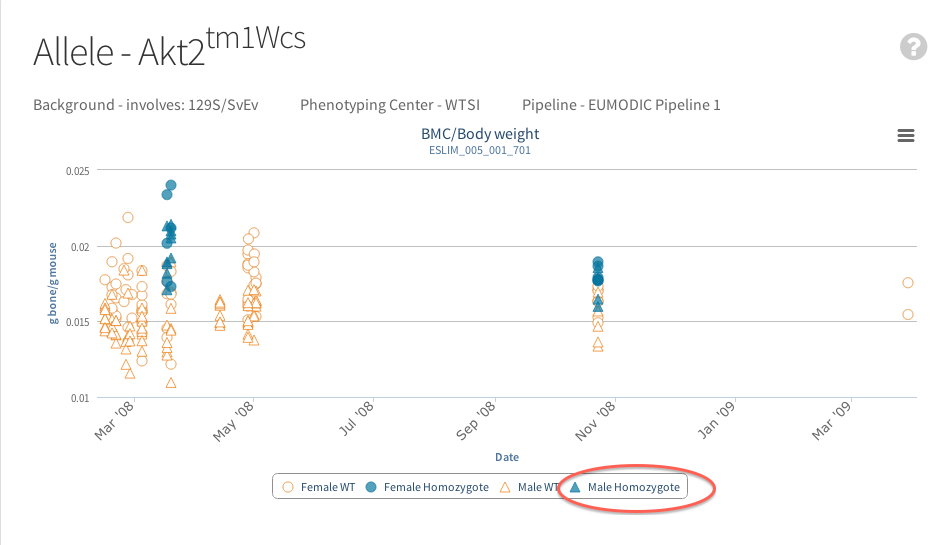
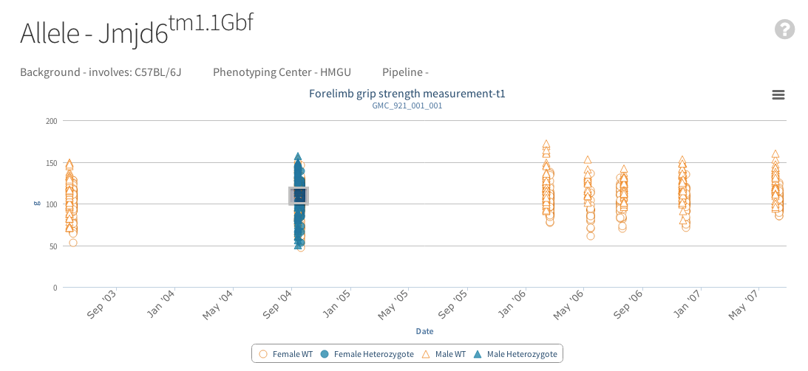
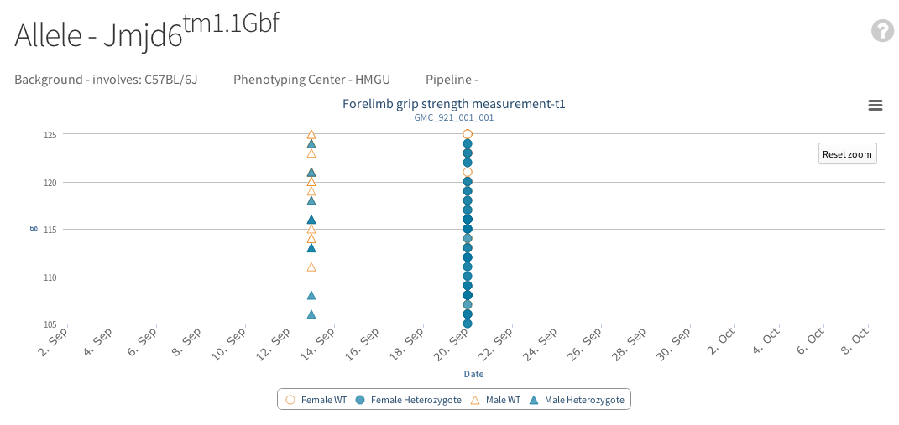

Quick help links
Graphs
Where is the data from?
Currently data for the graphs are obtained from legacy data with the MP calls, associated p value and max effect from Europhenome. On the right of the tables from the genes page or the phenotypes page Europhenome links are available to the original data. Graphs next to these links are new graphs representing the same data from europhenome. When data becomes available these new graphs will be used to display the new data from the IMPC procedures.
Interacting with Graphs
Graphs are interective so that you can adjust the view to your liking. Click on a legend will remove a set of data from the graph. This is especially useful if you wish to remove "noise" from a graph and focus on the control or experimental data. 
After clicking on the control legend the control data has dissappeared:
Hovering over a data point or error bars displays extra information about the data point:
If appropriate the graph will allow you to zoom in on a data set by clicking and dragging to create a square/zoomable area:
Once zoomed a "Reset zoom" button appears at the right of the graph to enable the graph to be reset to original position: 
An export button is always visible on the right hand side of the graphs where the graph picture can be exported in png, jpeg, pdf or svg format which will be downloaded to your computer:

Exporting Graph Data
Images of the graphs can be saved to your computer. At present there is no way of easily downloading the data for the graph this is a feature we will implement in the near future. However there is a restful web service available for retrieving information pertaining to experiments via a web browser or a programming language of your choice documentation for this can be found here.
Types of Graphs and Equations
Currently 4 types of graph exist in the IMPC portal from the IMPC:
- Categorical Bar Graphs
- Unidimensional Scatter and Box Plot Graphs
- Time Series Graphs
- Scatter Plots Showing Data Grouped by Date
Categorical Bar Graphs

Categorical graphs contain data where an observation can be categorised into one of two or more groups e.g. Abnormal Eye or Normal Eye. Graphs are presented as bar graphs with a table underneath. If IMPC data is available this will be displayed otherwise if data from europhenome is available the p values and max effects will be displayed. Note that these may not correlate exactly with the data displayed in the graphs although every attempt has been made to make them correlate (see statistic help for more information).
Unidimensional Scatter and Box Plot Graphs

Where an observation can be measured on a continuous basis for example red blood cell counts or tail length we display them in a mixed box and scatter plot. The first column contains a box plot for wild type data the second a scatter plot for that same wild type data. The third column is a box plot for homozygote or heterozygote data and the 4th will be
a scatter plot for the same data. Hover over the box in the graph will show the basic statistics for that set of data: